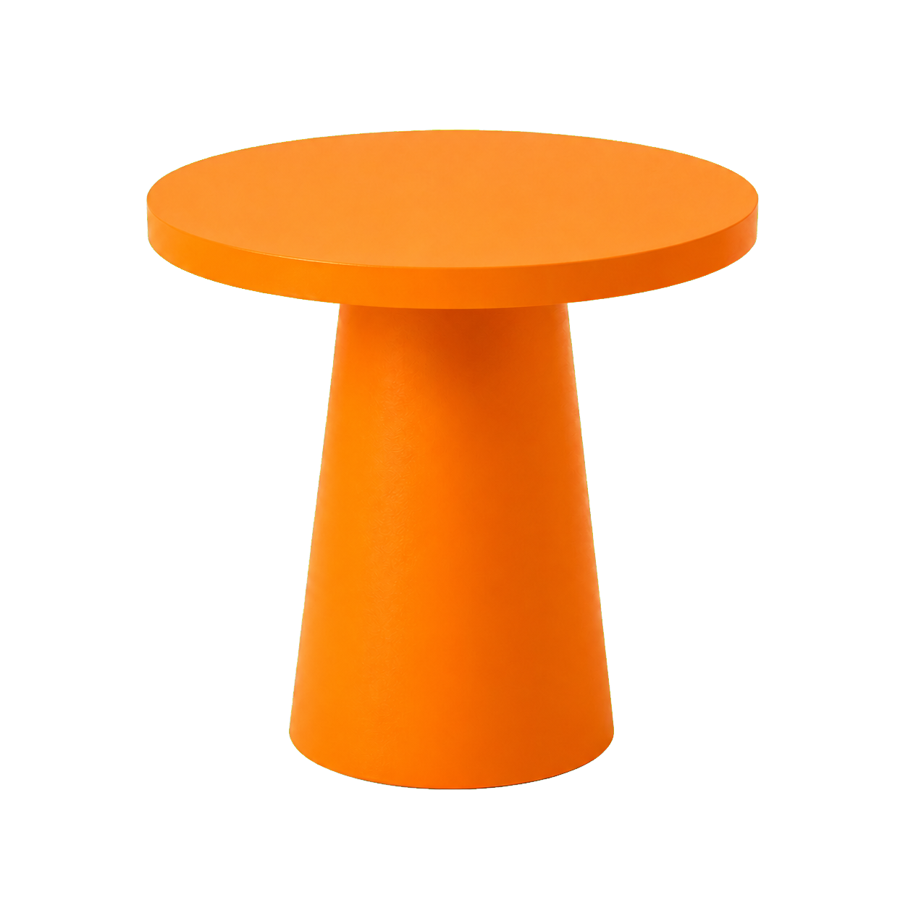
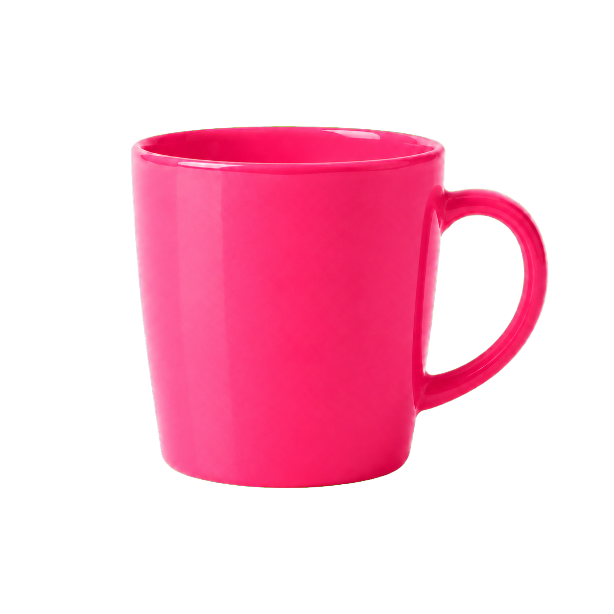
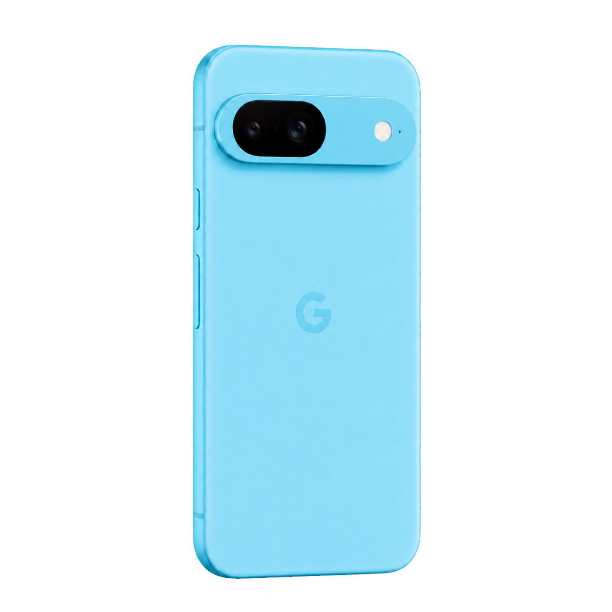
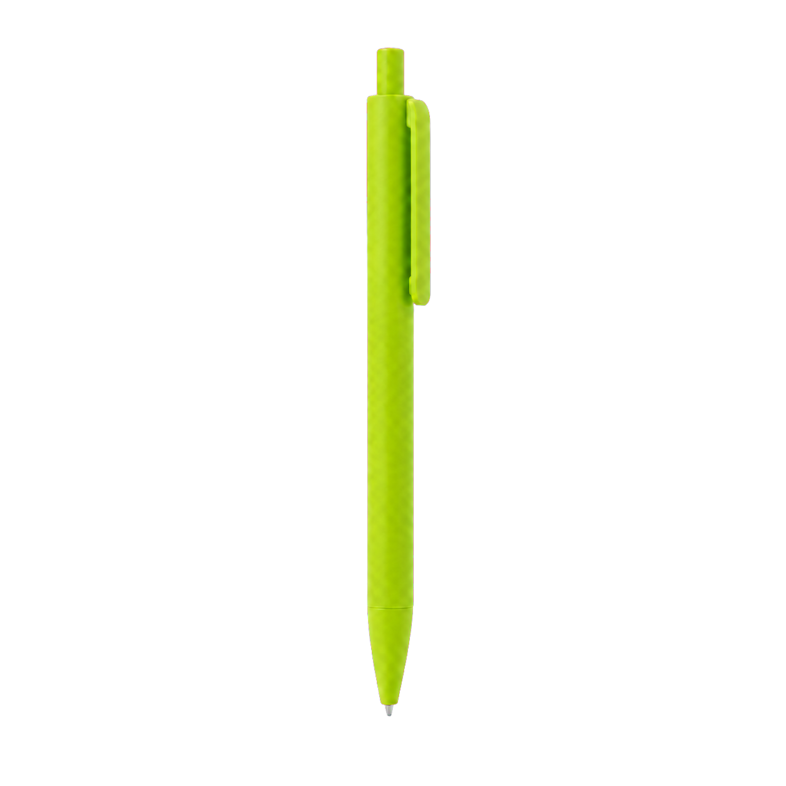

Website
Simple structure, cleaner text, and Monokai accents.
This website uses HTML and CSS with a light editor-inspired base. The background and body text stay readable, while the accent colors come from the Monokai editor palette.
Projects
Course Work
Project 0
Two Sum
C++ implementation using a hash map to find two indices whose values add to a target. The project includes tests, documentation, and GitHub workflow evidence.
View Project 0Project B
CSV Mini Database
A mini database project focused on storing and managing structured records with CSV files.
View Project BLearning Record
GitHub Workflow
Design
Monokai objects become moving parts of the page.
The background and body text stay simple, while the Monokai palette becomes an interactive desktop still life. Hover and click the objects to make the composition shift.



